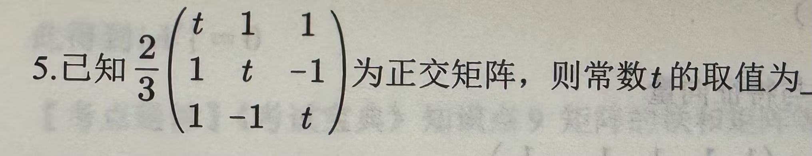
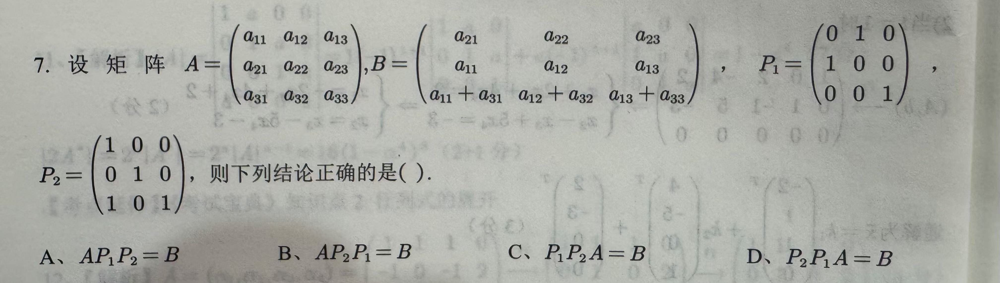
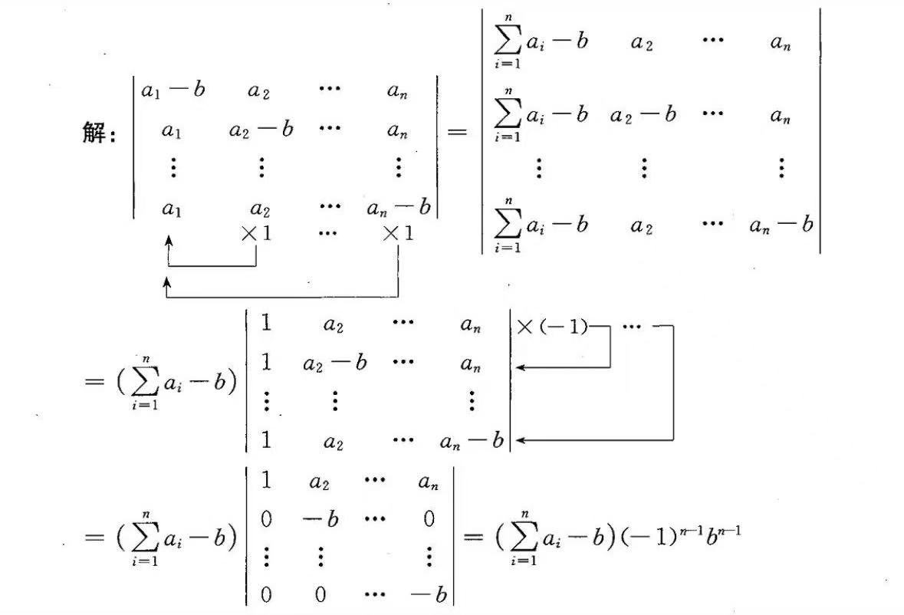

# 逆矩阵
# 二阶矩阵的逆矩阵求法
# 公式法


# 初等变换法

# 对角分块法（分块对角矩阵）

# 抽象矩阵法（构造 + 待定系数）

# 标准二阶

规律：
# 二阶对角矩阵

对角线取倒数即可
# 特征值
# 基础知识
其中 可能为 0
特征向量只能属于一个特征值
# 抽象矩阵求解特征值 —— 凑形式

于是可以直接得到 0 是一个特征值
同理凑出第二个特征值 1
# 特征值的求法
接下面的方程
对于三角形的矩阵，特征值可以直接算出结果，直接就是主对角线的元素
可以用按列或者行展开计算
如果有重根需要都写出来比如
# 特征向量的求法
需要先解出特征值

# 线性相关性
# 数字型向量组的线性相关性
线性相关的判断
一、行列式为零：
二、通过秩来判断
# 抽象向量组的线性相关性
思路
- 先把向量组转化为一个线性无关组乘以一个矩阵
- 再判断矩阵是否是可逆阵
- 向量组与可逆 / 不可逆阵乘积判断整个向量组是否是线性相关

# 极大无关组

有几个秩最大无关组就有几个向量
拐角处的列向量就是最大无关组的各个向量
# 相似矩阵
# 基础知识
定义：满足下面式子，记作 A~B
特别的，如果 A 能与对角形矩阵相似，则称 A 可对角化
A 和 B 相似 =>A 和 B 等价 & A 和 B 的特征值相同 & 行列式相同
# 矩阵与对角线矩阵相似的条件
n 阶矩阵 A 可对角化 <=>A 有 n 个线性无关的特征向量
若 n 阶矩阵 A 有 n 个互异的特征值，则 A 可对角化
若无重根，则一定可以对角化
若有重根：
满足 时可以对角化
# 正交
若 则称向量 与 正交，记作
正交化的方法 （下面这个括号是内积运算的意思）
单位化后还需要取单位化
# 正交矩阵的定义和性质

例题

利用正交矩阵的定理
观察可知这个矩阵是对称的，所以就是矩阵的平方 = E，解方程
[!warning] 注意
特征值的乘积等于矩阵的行列式，这个可以建立方程
[!warning] 注意
或者
例子
# 矩阵的初等变化

利用单位阵来开，首先是要求左乘，接着是看单位阵的变化
单位阵的变化就是右乘的矩阵的变化
所以该题选
# 线性方程组解的判断

[!warning] 注意
写这个增广矩阵的时候不要把右边的常数项变号了
[!warning] 注意
可逆方阵与单位矩阵等价
[!warning] 注意
行列式里面竖着的有相同的系数也可以提出来
# 行列式计算
n 阶行列式计算 -> 化为三角矩阵
